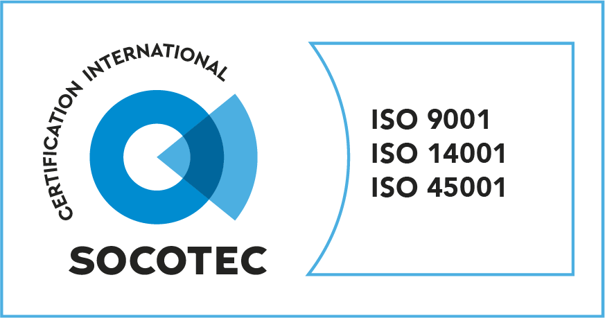
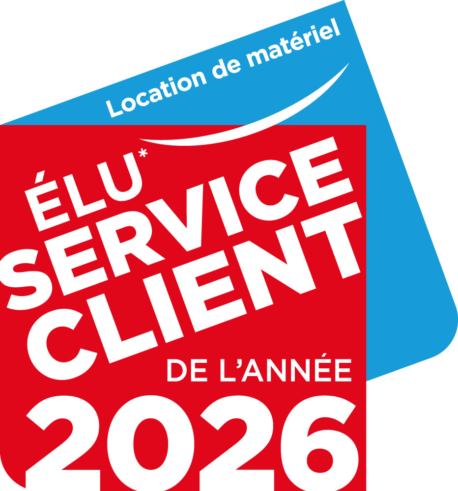
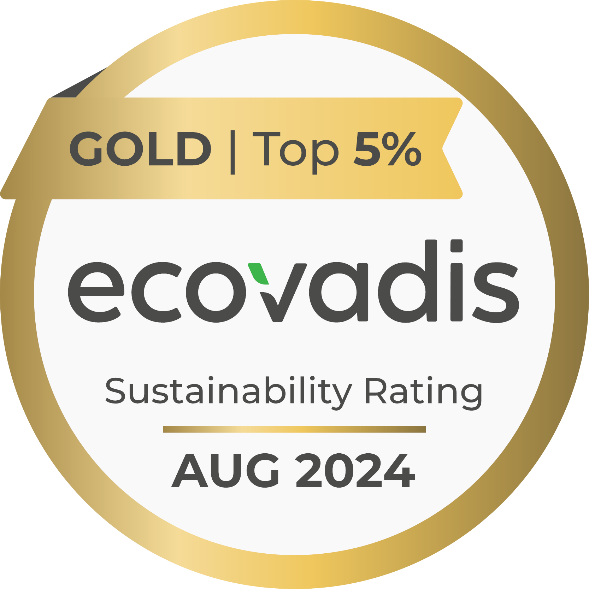

Le Groupe Loxam
Toujours animé par la volonté d’être au plus près de ses clients et de leurs chantiers, le Groupe Loxam a développé un réseau unique de 1 120 agences réparties dans 29 pays, sur 4 continents. Ce maillage international fait aujourd’hui de Loxam le premier réseau de location de matériel en Europe, capable de répondre efficacement aux attentes de l’ensemble de ses parties prenantes.
Avec 11 900 collaborateurs à travers le monde, le Groupe agit comme un véritable partenaire, engagé aux côtés de ses clients pour accompagner chacun de leurs projets. Son parc de plus de 600 000 machines, le plus important d’Europe, lui permet d’apporter des solutions adaptées à tous les besoins, avec un haut niveau de fiabilité et de sécurité. Fort de plus de 50 ans d’expérience, Loxam s’est imposé grâce à une qualité de service reconnue par ses clients et partenaires.
Depuis plus de 50 ans, la sécurité constitue un pilier majeur de l’engagement du Groupe. Au-delà de la formation et de la sensibilisation de ses équipes, Loxam adopte une démarche proactive pour anticiper les risques et encourager l’innovation en matière de prévention. Cette dynamique s’illustre notamment à travers les « Rencontres de la sécurité » organisées chaque année. Guidé par un principe clair — « La sécurité, toujours et partout » — le Groupe place la prévention au cœur de ses actions. Dans cette continuité, Loxam propose depuis 2002 une offre complète de formations à la conduite d’équipements (CACES®) et à la prévention des risques professionnels. Son entité Loxam Formation est reconnue organisme de formation par Qualiopi.
Cet engagement durable en faveur de la santé et de la sécurité au travail s’est concrétisé par l’obtention, fin 2019, de la certification ISO 45001 pour l’ensemble de son réseau en France.
La qualité et le respect de l’environnement font également partie intégrante des priorités du Groupe. Loxam a ainsi été le premier loueur de matériel au monde à atteindre le niveau 3 de la norme ISO 26000 pour sa politique RSE. Il détient également les certifications ISO 9001 et ISO 14001, témoignant de son engagement constant en matière de performance et de développement durable.


